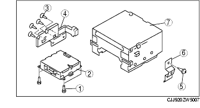

Audio unit disassembly/assembly
1. Remove the audio unit. (See CENTER PANEL MODULE DISASSEMBLY/ASSEMBLY.)
2. Disassemble in the order indicated in the table.

3. Assemble in the reverse order of disassembly.
1. Remove the audio unit. (See CENTER PANEL MODULE DISASSEMBLY/ASSEMBLY.)
2. Disassemble in the order indicated in the table.

3. Assemble in the reverse order of disassembly.